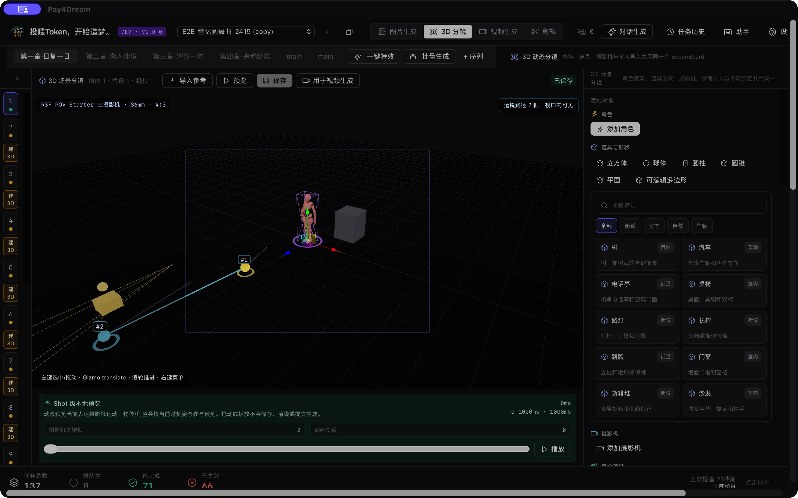

Pay4Dream
先在 3D 分镜里把镜头走一遍，再进入生成
版本 … · 2026-07-27
下载 Pay4Dream 1.0.1
Public 版支持 macOS 与 Windows，无需邀请码或激活码。安装后配置你自己的模型 API Key，即可开始建立项目、管理素材和设计镜头。
选择对应你的系统下载。
1.0.1 重点更新：3D 分镜
Android 镜头捕捉器技术预览：中英字幕演示陀螺仪、双摇杆运镜、3D 场景编辑和关键帧动画。画面来自模拟器，真实设备硬件验收仍在进行。

在统一 SceneBoard 中检查构图、机位、动作和运镜，再决定参考与生成路线。
- 统一调度：角色、场景道具、姿态、摄影机、焦距、关键帧和时间线预演集中在一个 SceneBoard。
- 旋转修复：单个模型与组合道具都能通过旋转控件更新可见姿态；组合道具围绕共同中心整体变换，并支持撤销、重做和保存恢复。
- 一致的鼠标操作：左键拖动平移视角，
Shift + 左键 环绕观察，滚轮缩放；右键只打开场景菜单。
- 先设计，再生成：镜头运动轨迹和参考策略可以在消耗生成额度前检查，再进入视频提交链路。
- 多来源参考：本地图片 / 视频、Cadrage 与移动端采集素材可以进入统一参考链路。
- 移动端协作：Android 镜头捕捉器技术预览可采集陀螺仪 / 摇杆运镜、编辑 3D 场景与关键帧，并通过
.p4dcapture 返回桌面；iOS 上线时间未定。
安装与安全提示
macOS 包为 ad-hoc 签名且未经过 Apple notarization；首次打开请右键 App 选择「打开」。Windows 安装包未签名，SmartScreen 出现时请核对文件名与发布页后再选择「仍要运行」。Windows 已通过原生构建与安装包检查，但尚未完成真实 Windows 机器上的安装启动验收。
只从本页或 GitHub Release 下载 Public 包。Internal 与 Beta 包不对外分发。
试用须知
- Public 1.0.1 无需邀请码或激活码，首次启动可直接进入应用。
- 需要你自带模型 API Key（在应用内设置里填）。LLM 支持 Claude / GPT / Gemini / Grok / OpenRouter / DeepSeek / Kimi / Qwen / GLM / MiniMax / 自定义 OpenAI-compatible；本版不提供任何托管的模型额度或公共通道。
- 你的 Key 仅保存在本机、直接发往对应模型厂商，我们不经手、不上传。
试用手册
第一次用？看 试用 Manual —— 从安装、填 Key 到建立 3D 分镜与生成第一条成片。
反馈与报告问题
遇到 bug 或有建议，优先在 App 内打开 AI 助手 描述问题；
如果无法打开 App，请邮件联系
pay4dream.app@gmail.com。
反馈时请附上系统版本、App 版本、复现步骤和截图，方便定位。